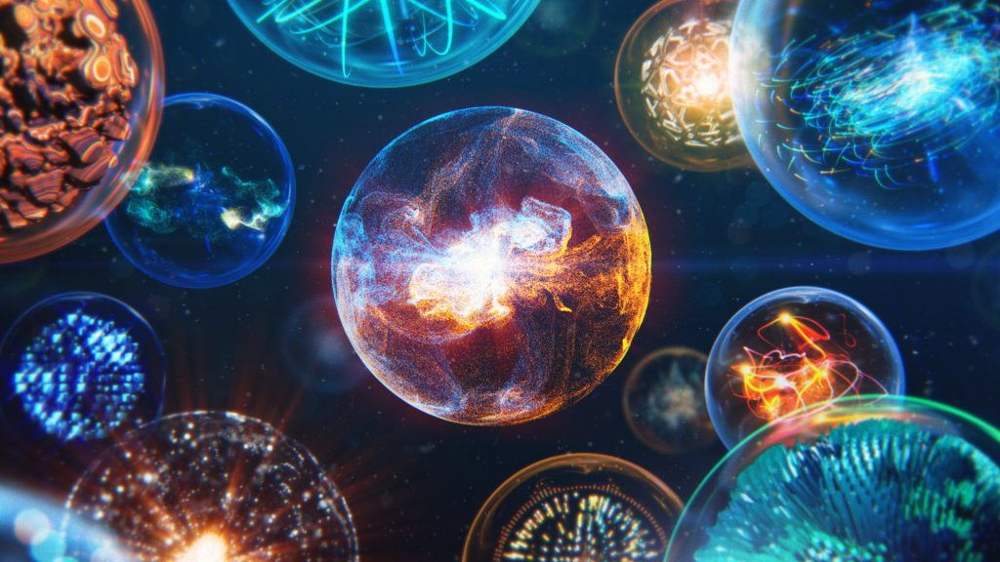

发布日期
10/12
2019
三种不同的AE粒子插件
AE的粒子插件有很多种，这里主要介绍以下三种：
【1】Red Giant Trapcode Suite（Particular&Form粒子插件）
著名而强大的红巨人粒子特效套装插件Red Giant Trapcode Suite。插件分类名称叫RG Trapcode，部分插件支持Premiere Pro。
官网地址：https://www.redgiant.com/products/trapcode-suite/。
【2】Superluminal Stardust（Stardust粒子插件）
Stardust是AE软件新一代节点式的三维粒子插件（也称星辰粒子插件），独立的操控界面，功能强大，含多种预设，轻松制作出漂亮而复杂的效果，拥有发射器、粒子、复制、力场、辅助发射器、3D模型、文字、Maks等控制，模式也非常多。
官网地址：http://aescripts.com/stardust/。
【3】Rowbyte Plexus 3（Plexus粒子插件）
Plexus 3粒子插件增加和改进了众多功能，可用于制作点线面三维粒子效果，渲染速度快；支持3D模型导入，存储为兼容性高的OBJ格式，作为粒子发射器导入AE；借助路径，和文字以及灯光创建粒子发射，提供了多种自定义特效，分形，颜色，球形场和阴影等。
官方地址：https://www.rowbyte.com/plexus/。
备注：以上插件均为最新版。（最后更新时间：2019.11.04）
分析与比较
Particular粒子插件适用于模拟火焰、粒子喷射、火焰等效果；
Form粒子插件适用于面状科技效果大规模粒子动画；
Stardust粒子插件适用于科幻动画效果制作以及导入三维模型制作动画；
Plexus粒子插件适用于和三维模型结合的电线连接科幻效果。
